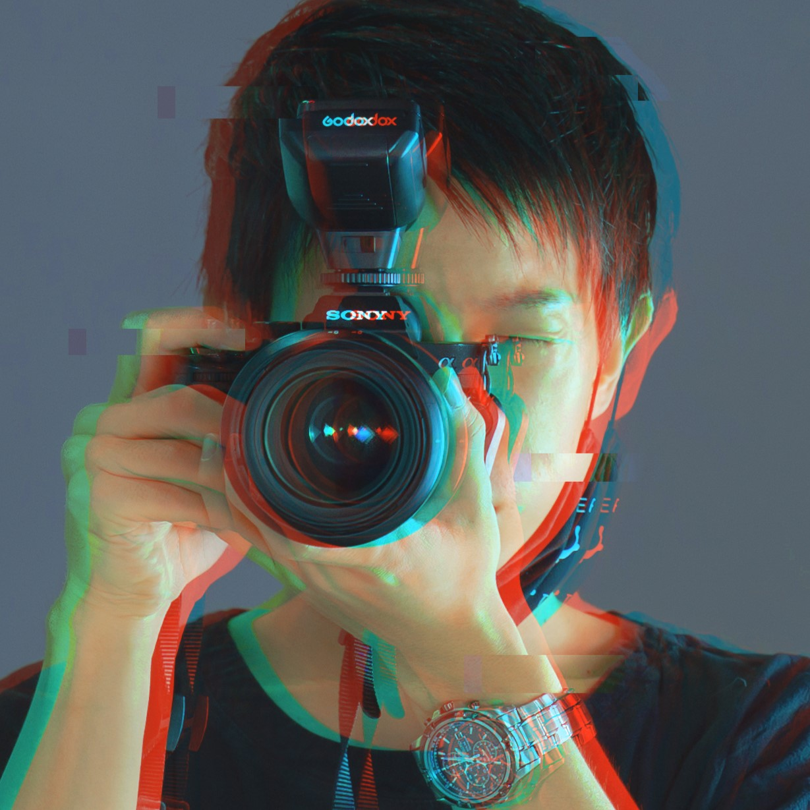

FRAGMENTS
Visual Portfolio
Scroll
↓
Visual Portfolio

大阪・近畿を中心に活動するフォトグラファー。
「たのしく、まじめに」を軸に、スタジオからロケ、ソロから合わせ撮影まで幅広く対応。
クールでエッジの効いたライティングから、体温を感じるエモーショナルな表現まで、現場の空気感を大切にしながら被写体の個性と世界観を最大限に引き出す一枚を追求しています。